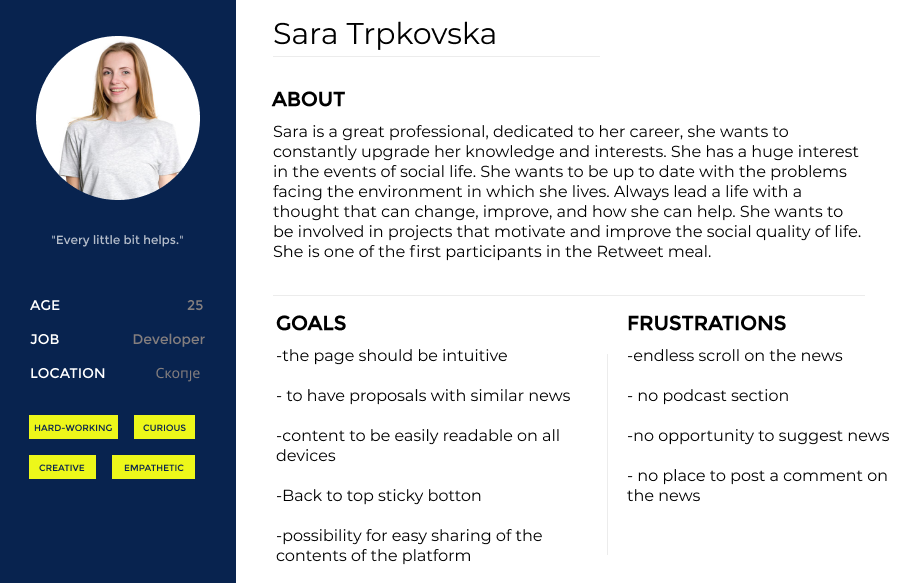
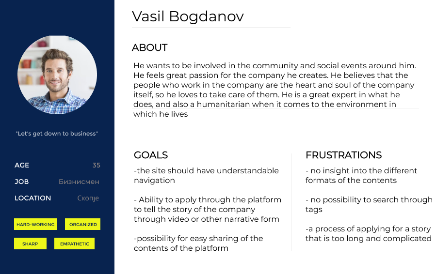
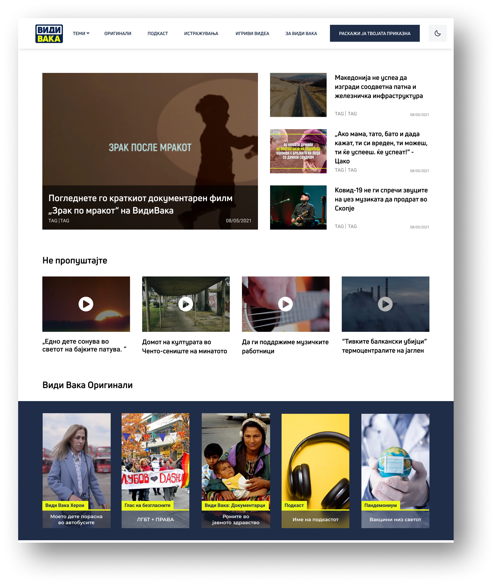
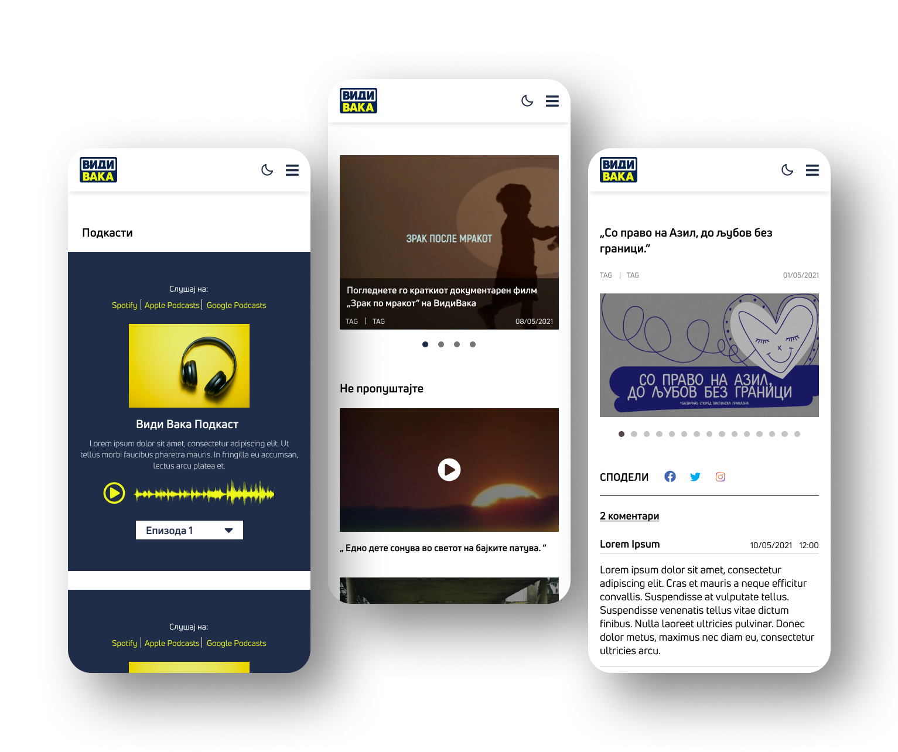
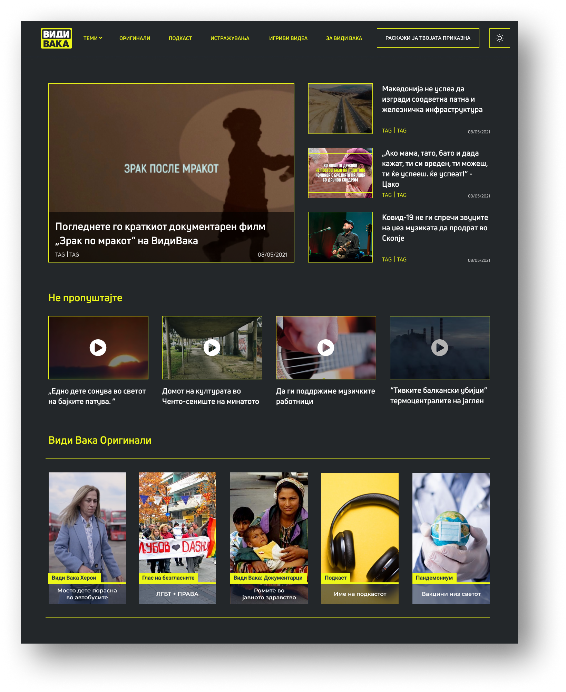
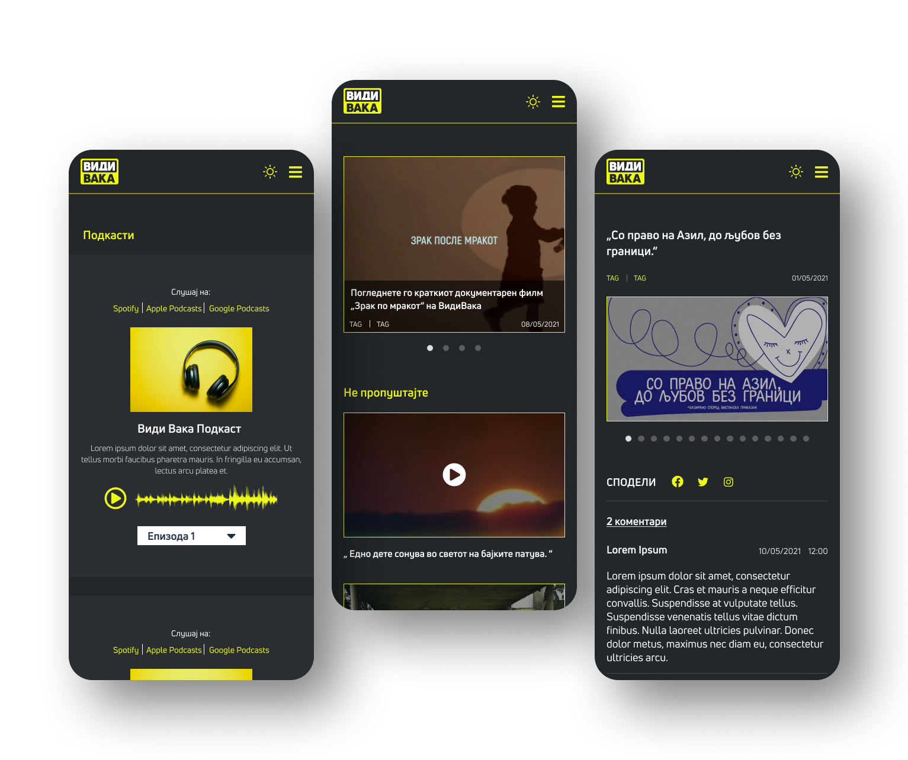

Vidi Vaka is a medium intended to inform the digital generation, which usually receives news online. Their way of reporting is usually not related to the daily events, nor do they focus on the daily political news. On the contrary, they try to focus on the topics that they think are most important to the public, as well as the people that they think deserve more attention. That is why their motto is "We make stories that are worthwhile". What sets them apart from other video production companies is the storytelling, they do not produce videos but tell stories. Their specialty is to find the best way to convey the story to the audience in the most effective way. Therefore, it can be said that Vidi Vaka is not only a medium, but also a storytelling studio that deals with various topics with which it gives a voice to the deaf.
Their vision is to develop storytelling to an even higher level, to introduce new, innovative formats both in the production and in the storytelling itself.
So the biggest challenge in redesigning their website was that the new page should reflect their work, ie. the new website should reflect a modern brand, technologically developed, which offers a wide range of storytelling formats, and the content it offers is clear, understandable and important to all. Also, the new website should dynamically present their work and the different story formats they offer and emphasize their quality. So the website need to give us technical possibilities for new formats of narrative content like storytelling through data visualization, podcasts, multimedia formats, etc.
Our main goal of this project was for the new web page to be agile, ie to suffer easy change of segments, rearrangement, etc., in case a new content format is added or we want to remove a format, and thus the goal segment of the site. Because storytelling technologies are changing rapidly, it is important to be able to implement new things, that is, to add new segments in a simple way. From a design point of view, that would probably mean more modularity, less monolithicity.
So the first thing we did after a detailed review of the submitted brief, was the interview with the stakeholders through which we got a more detailed picture of what they want to be reflected through the new website. The next step was competitive analysis, we looked at our competitors, their strengths and weaknesses and found out where we could improve.
Based on the research we conducted on the users, we got 2 personas
Our primary persona is Sara Trpkovska a young, responsible person who constantly follows the events in the environment in which she lives and always tries to do everything in her power.
Our secondary person is an older person, a business owner who cares about his employees because he knows that they are the ones who owe the success of his company.
Since this project was a redesign of an existing website that already has a well-established and recognizable brand identity, we tried to keep it.
Also through the interviews we did with our users we noticed that 70% of users access the website through their mobile device. That is why we paid great attention to responsiveness.
Many users of their electronic devices use dark mode, so during the redesign of the site we introduced a dark mode option which is shown in the following screens.
 If you want to see the whole design and prototype you can check the following link.
Through the work of this project I had the opportunity to go through in detail all the stages of the redesign of a website. Also through the meetings we held with our client we managed to get a better picture of our solution. But working in a group with 4 more UX / UI designers opened my horizons to fresh perspectives and constructive feedback from people that are in the same field as I am.
Created by Olivera Bojchevska 2021 All rights reserved